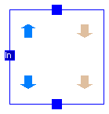

This package contains classes (layer models) to built ASM1 secondary clarifier models, an Interfaces sub-library and provides an ASM1 10-layer secondary clarifier model all bases on Takacs [1] double exponential sedimentation velocity function. A secondary clarifier layer model needs at least a top_layer, a feed_layer and a bottom_layer and may have several upper_layer in between above the feed_layer and several lower_layer in between below the feed_layer. Main Author: Gerald Reichl Technische Universitaet Ilmenau Faculty of Informatics and Automation Department Dynamics and Simulation of ecological Systems P.O. Box 10 05 65 98684 Ilmenau Germany email: gerald.reichl@tu-ilmenau.de References: [1] I. Takacs and G.G. Patry and D. Nolasco: A dynamic model of the clarification-thickening process. Water Research. 25 (1991) 10, pp 1263-1271. Copyright (C) 2000 - 2002, Gerald Reichl
The Modelica package is free software; it can be redistributed and/or modified under the terms of the Modelica license, see the license conditions and the accompanying disclaimer in the documentation of package Modelica in file "Modelica/package.mo".
WasteWater.ASM1.SecClar.Takacs.bottom_layer

This class models the lowest layer of an ASM1 secondary clarifier based on Takacs. No sedimentation flux (mass exchange) with underneath but hydraulic and sedimentation flux (same direction) with above layer. From here return and waste sludge is removed.
| Name | Default | Description |
|---|---|---|
| zm | height of m-th secondary clarifier layer [m] | |
| Asc | area of secondary clarifier [m2] |
model bottom_layer "Bottom layer of Takac`s SC model" package WWSC = WasteWater.ASM1.SecClar.Takacs.Interfaces; extends WWSC.SCParam; extends WWSC.SCVar; extends WWSC.ratios; ASM1.Interfaces.WWFlowAsm1out PQr; ASM1.Interfaces.WWFlowAsm1out PQw; WWSC.LowerLayerPin Up; equation // sink velocity vS = WWSC.vSfun(X, Xf); Jsm = 0.0; // ODE of solid component der(X) = ((Up.Qr + Up.Qw)/Asc*(Up.X - X) + Up.SedFlux)/zm; // ODEs of soluble components der(Si) = (Up.Qr + Up.Qw)*(Up.Si - Si)/(Asc*zm); der(Ss) = (Up.Qr + Up.Qw)*(Up.Ss - Ss)/(Asc*zm); der(So) = (Up.Qr + Up.Qw)*(Up.So - So)/(Asc*zm); der(Sno) = (Up.Qr + Up.Qw)*(Up.Sno - Sno)/(Asc*zm); der(Snh) = (Up.Qr + Up.Qw)*(Up.Snh - Snh)/(Asc*zm); der(Snd) = (Up.Qr + Up.Qw)*(Up.Snd - Snd)/(Asc*zm); der(Salk) = (Up.Qr + Up.Qw)*(Up.Salk - Salk)/(Asc*zm); // upward connection Up.vS_dn = vS; Up.X_dn = X; // return and waste sludge volume flow rates PQr.Q + Up.Qr = 0; PQw.Q + Up.Qw = 0; // return sludge flow, solid and soluble components (ASM1) PQr.Si = Si; PQr.Ss = Ss; PQr.Xi = rXi*X; PQr.Xs = rXs*X; PQr.Xbh = rXbh*X; PQr.Xba = rXba*X; PQr.Xp = rXp*X; PQr.So = So; PQr.Sno = Sno; PQr.Snh = Snh; PQr.Snd = Snd; PQr.Xnd = rXnd*X; PQr.Salk = Salk; // waste sludge flow, solid and soluble components (ASM1) PQw.Si = Si; PQw.Ss = Ss; PQw.Xi = rXi*X; PQw.Xs = rXs*X; PQw.Xbh = rXbh*X; PQw.Xba = rXba*X; PQw.Xp = rXp*X; PQw.So = So; PQw.Sno = Sno; PQw.Snh = Snh; PQw.Snd = Snd; PQw.Xnd = rXnd*X; PQw.Salk = Salk; end bottom_layer;
WasteWater.ASM1.SecClar.Takacs.lower_layer

This class models the layers between the influent layer (feed_layer) and the lowest layer (bottom_layer) of an ASM1 secondary clarifier based on Takacs. Hydraulic and sedimentation flux (mass exchange in same direction) with above and underneath layer. Sedimentation flux is calculated based on the double-exponential sedimentation velocity function by Takacs.
| Name | Default | Description |
|---|---|---|
| zm | height of m-th secondary clarifier layer [m] | |
| Asc | area of secondary clarifier [m2] |
model lower_layer "Layer below influent of Takac`s SC model" package WWSC = WasteWater.ASM1.SecClar.Takacs.Interfaces; extends WWSC.SCParam; extends WWSC.SCVar; WWSC.LowerLayerPin Up; WWSC.LowerLayerPin Dn; equation // sink velocity vS = WWSC.vSfun(X, Xf); // sedimentation flux in m-th layer sinking to lower layer Jsm = min(vS*X, Dn.vS_dn*Dn.X_dn); // ODE of solid component der(X) = ((Up.Qr + Up.Qw)/Asc*(Up.X - X) + Up.SedFlux - Jsm)/zm; // ODEs of soluble components der(Si) = (Up.Qr + Up.Qw)*(Up.Si - Si)/(Asc*zm); der(Ss) = (Up.Qr + Up.Qw)*(Up.Ss - Ss)/(Asc*zm); der(So) = (Up.Qr + Up.Qw)*(Up.So - So)/(Asc*zm); der(Sno) = (Up.Qr + Up.Qw)*(Up.Sno - Sno)/(Asc*zm); der(Snh) = (Up.Qr + Up.Qw)*(Up.Snh - Snh)/(Asc*zm); der(Snd) = (Up.Qr + Up.Qw)*(Up.Snd - Snd)/(Asc*zm); der(Salk) = (Up.Qr + Up.Qw)*(Up.Salk - Salk)/(Asc*zm); // downward connections Dn.Qr + Up.Qr = 0; Dn.Qw + Up.Qw = 0; Dn.X = X; Dn.SedFlux = -Jsm; Dn.Si = Si; Dn.Ss = Ss; Dn.So = So; Dn.Sno = Sno; Dn.Snh = Snh; Dn.Snd = Snd; Dn.Salk = Salk; // upward connections Up.vS_dn = vS; Up.X_dn = X; end lower_layer;

This class models the influent layer of an ASM1 secondary clarifier based on Takacs. It receives the wastewater stream from the biological part (feed). Hydraulic and sedimentation flux (mass exchange in opposite directions) with above layer and hydraulic and sedimentation flux (mass exchange in same direction) with underneath layer. Sedimentation flux is calculated based on the double-exponential sedimentation velocity function by Takacs.
| Name | Default | Description |
|---|---|---|
| zm | height of m-th secondary clarifier layer [m] | |
| Asc | area of secondary clarifier [m2] |
model feed_layer "Influent layer of Takac`s SC model"
package WWSC = WasteWater.ASM1.SecClar.Takacs.Interfaces;
extends WWSC.SCParam;
extends WWSC.SCVar;
WWSC.LowerLayerPin Dn;
WWSC.UpperLayerPin Up;
ASM1.Interfaces.WWFlowAsm1in In;
equation
// sink velocity
vS = WWSC.vSfun(X, Xf);
// sedimentation flux in m-th layer sinking to lower layer
Jsm = min(vS*X, Dn.vS_dn*Dn.X_dn);
// ODE of solid component
der(X) = (In.Q/Asc*Xf - (-Up.Qe)/Asc*X - (-(Dn.Qr + Dn.Qw))/Asc*X + Up.
SedFlux - Jsm)/zm;
// ODE of soluble components
der(Si) = (In.Q*In.Si - (-Up.Qe)*Si - (-(Dn.Qr + Dn.Qw))*Si)/(Asc*zm);
der(Ss) = (In.Q*In.Ss - (-Up.Qe)*Ss - (-(Dn.Qr + Dn.Qw))*Ss)/(Asc*zm);
der(So) = (In.Q*In.So - (-Up.Qe)*So - (-(Dn.Qr + Dn.Qw))*So)/(Asc*zm);
der(Sno) = (In.Q*In.Sno - (-Up.Qe)*Sno - (-(Dn.Qr + Dn.Qw))*Sno)/(Asc*zm);
der(Snh) = (In.Q*In.Snh - (-Up.Qe)*Snh - (-(Dn.Qr + Dn.Qw))*Snh)/(Asc*zm);
der(Snd) = (In.Q*In.Snd - (-Up.Qe)*Snd - (-(Dn.Qr + Dn.Qw))*Snd)/(Asc*zm);
der(Salk) = (In.Q*In.Salk - (-Up.Qe)*Salk - (-(Dn.Qr + Dn.Qw))*Salk)/(Asc*zm)
;
// volume flow rates
In.Q + Up.Qe + Dn.Qr + Dn.Qw = 0;
Dn.SedFlux = -Jsm;
Dn.X = X;
Dn.Si = Si;
Dn.Ss = Ss;
Dn.So = So;
Dn.Sno = Sno;
Dn.Snh = Snh;
Dn.Snd = Snd;
Dn.Salk = Salk;
Up.vS_dn = vS;
Up.X_dn = X;
Up.Si = Si;
Up.Ss = Ss;
Up.So = So;
Up.Sno = Sno;
Up.Snh = Snh;
Up.Snd = Snd;
Up.Salk = Salk;
end feed_layer;
WasteWater.ASM1.SecClar.Takacs.upper_layer

This class models the layers between the influent layer (feed_layer) and the effluent layer (top_layer) an ASM1 secondary clarifier based on Takacs. Hydraulic and sedimentation flux (mass exchange in opposite directions) with above and underneath layer. Sedimentation flux is calculated based on the double-exponential sedimentation velocity function by Takacs.
| Name | Default | Description |
|---|---|---|
| zm | height of m-th secondary clarifier layer [m] | |
| Asc | area of secondary clarifier [m2] | |
| Xt | threshold value for Xtss [mg/l] |
model upper_layer "Layer above influent of Takac`s SC" // Xt = Xthreshold package WWSC = WasteWater.ASM1.SecClar.Takacs.Interfaces; extends WWSC.SCParam; extends WWSC.SCVar; parameter WWU.MassConcentration Xt; WWSC.UpperLayerPin Dn; WWSC.UpperLayerPin Up; equation // sink velocity vS = WWSC.vSfun(X, Xf); // sedimentation flux in m-th layer sinking to lower layer Jsm = if Dn.X_dn <= Xt then vS*X else min(vS*X, Dn.vS_dn*Dn.X_dn); // ODE of solid component der(X) = (Dn.Qe/Asc*(Dn.X_dn - X) + Up.SedFlux - Jsm)/zm; // ODEs of soluble components der(Si) = Dn.Qe*(Dn.Si - Si)/(Asc*zm); der(Ss) = Dn.Qe*(Dn.Ss - Ss)/(Asc*zm); der(So) = Dn.Qe*(Dn.So - So)/(Asc*zm); der(Sno) = Dn.Qe*(Dn.Sno - Sno)/(Asc*zm); der(Snh) = Dn.Qe*(Dn.Snh - Snh)/(Asc*zm); der(Snd) = Dn.Qe*(Dn.Snd - Snd)/(Asc*zm); der(Salk) = Dn.Qe*(Dn.Salk - Salk)/(Asc*zm); // downward connection Dn.SedFlux = -Jsm; // upward connections Up.Qe + Dn.Qe = 0; Up.vS_dn = vS; Up.X_dn = X; Up.Si = Si; Up.Ss = Ss; Up.So = So; Up.Sno = Sno; Up.Snh = Snh; Up.Snd = Snd; Up.Salk = Salk; end upper_layer;
WasteWater.ASM1.SecClar.Takacs.top_layer

This class models the top layer of an ASM1 secondary clarifier based on Takacs. No sedimentation flux (mass exchange) with above but hydraulic and sedimentation flux (opposite directions) underneath. From here effluent goes to the receiving water. Sedimentation flux is calculated based on the double-exponential sedimentation velocity function by Takacs.
| Name | Default | Description |
|---|---|---|
| zm | height of m-th secondary clarifier layer [m] | |
| Asc | area of secondary clarifier [m2] | |
| Xt | threshold value for Xtss [mg/l] |
model top_layer "Effluent layer of Takac`s SC model" package WWSC = WasteWater.ASM1.SecClar.Takacs.Interfaces; extends WWSC.SCParam; extends WWSC.SCVar; extends WWSC.ratios; parameter WWU.MassConcentration Xt; // Xt = Xthreshold WWSC.UpperLayerPin Dn; ASM1.Interfaces.WWFlowAsm1out Out; equation // sink velocity vS = WWSC.vSfun(X, Xf); // sedimentation flux in m-th layer sinking to lower layer Jsm = if Dn.X_dn <= Xt then vS*X else min(vS*X, Dn.vS_dn*Dn.X_dn); // ODE of solid component der(X) = (Dn.Qe/Asc*(Dn.X_dn - X) - Jsm)/zm; // ODEs of soluble components der(Si) = Dn.Qe*(Dn.Si - Si)/(Asc*zm); der(Ss) = Dn.Qe*(Dn.Ss - Ss)/(Asc*zm); der(So) = Dn.Qe*(Dn.So - So)/(Asc*zm); der(Sno) = Dn.Qe*(Dn.Sno - Sno)/(Asc*zm); der(Snh) = Dn.Qe*(Dn.Snh - Snh)/(Asc*zm); der(Snd) = Dn.Qe*(Dn.Snd - Snd)/(Asc*zm); der(Salk) = Dn.Qe*(Dn.Salk - Salk)/(Asc*zm); // downward connection Dn.SedFlux = -Jsm; // effluent volume flow rate Out.Q + Dn.Qe = 0; // effluent, solid and soluble components (ASM1) Out.Si = Si; Out.Ss = Ss; Out.Xi = rXi*X; Out.Xs = rXs*X; Out.Xbh = rXbh*X; Out.Xba = rXba*X; Out.Xp = rXp*X; Out.So = So; Out.Sno = Sno; Out.Snh = Snh; Out.Snd = Snd; Out.Xnd = rXnd*X; Out.Salk = Salk; end top_layer;
WasteWater.ASM1.SecClar.Takacs.SecClarModTakacs

This component models an ASM1 10 - layer secondary clarifier model with 4 layers above the feed_layer (including top_layer) and 5 layers below the feed_layer (including bottom_layer) based on Takacs` theory.
| Name | Default | Description |
|---|---|---|
| hsc | 4.0 | height of secondary clarifier [m] |
| n | 10 | number of layers of SC model |
| zm | hsc/(1.0*n) | height of m-th secondary clarifier layer [m] |
| Asc | 1500.0 | area of secondary clarifier [m2] |
| Xt | 3000.0 | threshold value for Xtss [mg/l] |
model SecClarModTakacs
"Secondary Clarifier ASM1 Model based on Takacs"
extends WasteWater.Icons.SecClar;
extends ASM1.SecClar.Takacs.Interfaces.ratios;
package SCP = ASM1.SecClar.Takacs;
package SI = Modelica.SIunits;
package WI = WasteWater.ASM1.Interfaces;
package WWU = WasteWater.WasteWaterUnits;
parameter SI.Length hsc=4.0 "height of secondary clarifier";
parameter Integer n=10 "number of layers of SC model";
parameter SI.Length zm=hsc/(1.0*n) "height of m-th secondary clarifier layer";
parameter SI.Area Asc=1500.0 "area of secondary clarifier";
parameter WWU.MassConcentration Xt=3000.0 "threshold for X";
// total sludge concentration in clarifier feed
WWU.MassConcentration Xf;
WI.WWFlowAsm1in Feed;
WI.WWFlowAsm1out Effluent;
WI.WWFlowAsm1out Return;
WI.WWFlowAsm1out Waste;
// layers 1 to 10
SCP.bottom_layer S1(
zm=zm,
Asc=Asc,
Xf=Xf,
rXs=rXs,
rXbh=rXbh,
rXba=rXba,
rXp=rXp,
rXi=rXi,
rXnd=rXnd);
SCP.lower_layer S2(
zm=zm,
Asc=Asc,
Xf=Xf);
SCP.lower_layer S3(
zm=zm,
Asc=Asc,
Xf=Xf);
SCP.lower_layer S4(
zm=zm,
Asc=Asc,
Xf=Xf);
SCP.lower_layer S5(
zm=zm,
Asc=Asc,
Xf=Xf);
SCP.feed_layer S6(
zm=zm,
Asc=Asc,
Xf=Xf);
SCP.upper_layer S7(
zm=zm,
Asc=Asc,
Xf=Xf,
Xt=Xt);
SCP.upper_layer S8(
zm=zm,
Asc=Asc,
Xt=Xt,
Xf=Xf);
SCP.upper_layer S9(
zm=zm,
Asc=Asc,
Xf=Xf,
Xt=Xt);
SCP.top_layer S10(
zm=zm,
Asc=Asc,
Xf=Xf,
Xt=Xt,
rXs=rXs,
rXbh=rXbh,
rXba=rXba,
rXp=rXp,
rXi=rXi,
rXnd=rXnd);
equation
connect(S1.Up, S2.Dn);
connect(S2.Up, S3.Dn);
connect(S3.Up, S4.Dn);
connect(S5.Up, S6.Dn);
connect(S6.Up, S7.Dn);
connect(S7.Up, S8.Dn);
connect(S9.Up, S10.Dn);
connect(S4.Up, S5.Dn);
connect(S8.Up, S9.Dn);
connect(Feed, S6.In);
connect(S1.PQw, Waste);
connect(S10.Out, Effluent);
connect(S1.PQr, Return);
// total sludge concentration in clarifier feed
Xf = 0.75*(Feed.Xs + Feed.Xbh + Feed.Xba + Feed.Xp + Feed.Xi);
// ratios of solid components
rXs = Feed.Xs/Xf;
rXbh = Feed.Xbh/Xf;
rXba = Feed.Xba/Xf;
rXp = Feed.Xp/Xf;
rXi = Feed.Xi/Xf;
rXnd = Feed.Xnd/Xf;
end SecClarModTakacs;